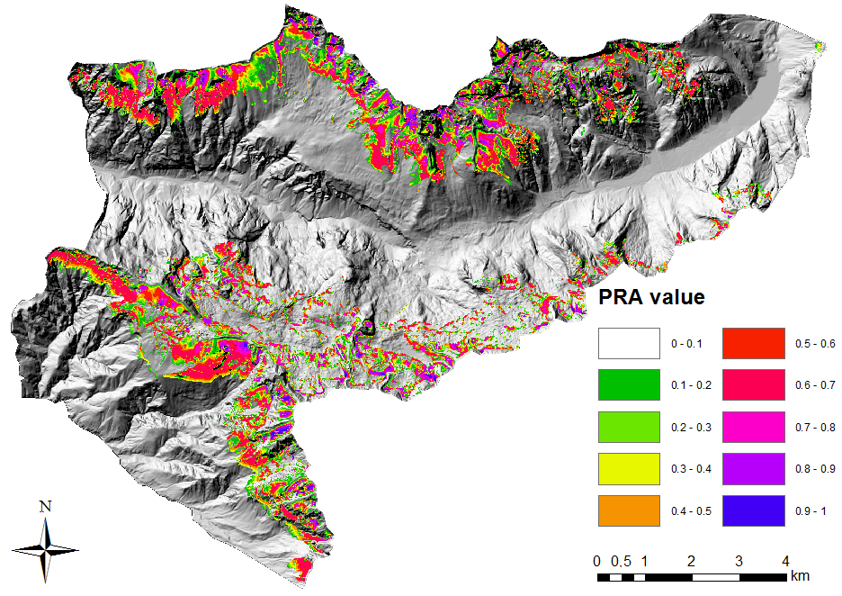

Academic Publications
-
MSc Thesis (Italian)
"Le pericolosità da valanga calcolata e visualizzata. Un modello numerico-geografico."
A thesis on calculating avalanche hazard according the current conditions of snow and weather using an R algorithm.
Supervised by Dr. Betty Sovilla PhD of the WSL Institute for Snow and Avalanche Research SLF of Davos, Switzerland.
Download PDF | View on ResearchGate -
Thesis Article (Italian)
"Le propensione al distacco quantificata. Un modello per calcolare e visualizzare la pericolosità da valanga."
An article published on "Neve e Valanghe" in Italy that builds up on the MSc thesis, focusing on the avalanche release propensity.
Co-authored by Dr. Betty Sovilla PhD of the WSL Institute for Snow and Avalanche Research SLF of Davos, Switzerland.
Download PDF | View on ResearchGate -
Thesis Article (English)
"Quantifying the release propensity — A geographical model for visualising and calculating avalanche hazard."
English translation of the Italian article above. Used for international reference only.
Download PDF | View on ResearchGate